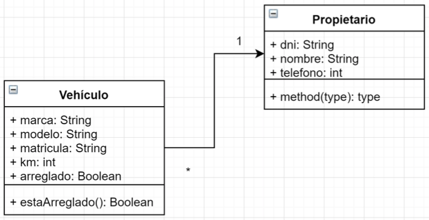
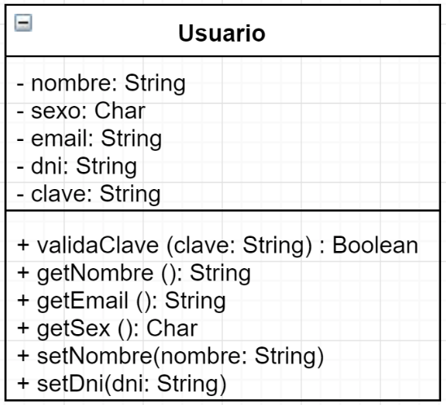
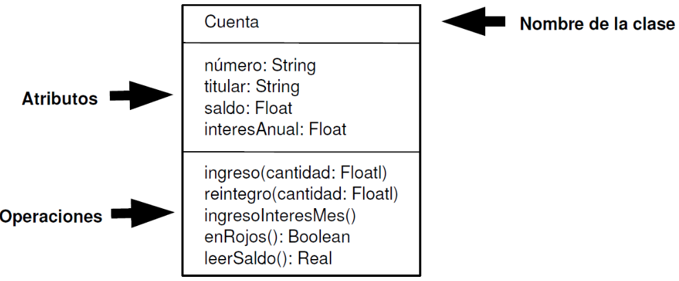
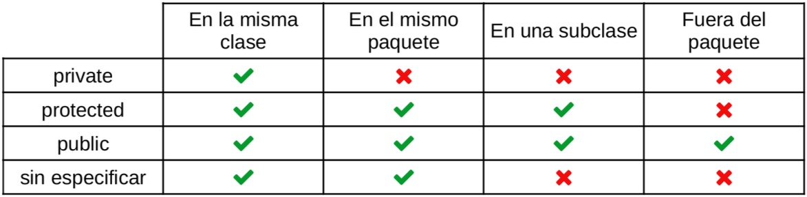
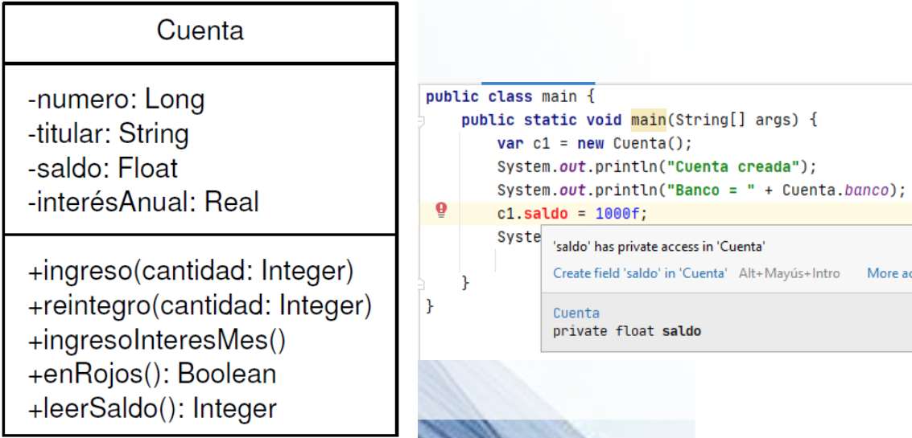
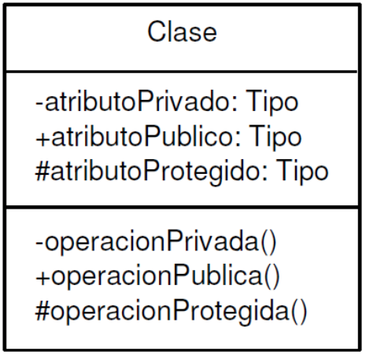
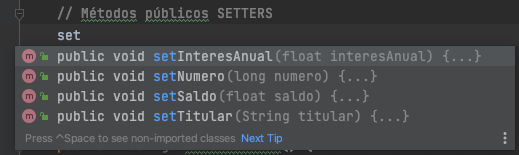
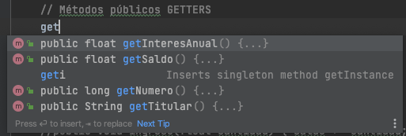
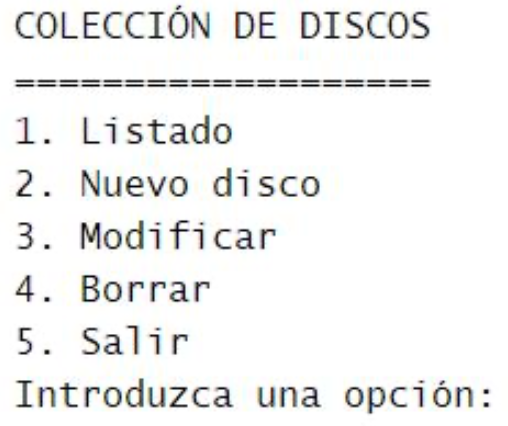

Tema 5: Introducción a la Programación Orientada a Objetos (POO)¶
Duración y criterios de evaluación
Duración estimada: 10 sesiones
Resultados de aprendizaje
- Comprender el paradigma de la Programación Orientada a Objetos y sus fundamentos.
- Identificar los elementos de una clase: atributos, métodos y constructores.
- Aplicar la encapsulación mediante modificadores de acceso, getters y setters.
- Conocer el empaquetado de clases y los arrays de objetos.
- Utilizar enumeraciones (
enum) como tipos especiales.
Criterios de evaluación
- Se identifica la estructura general de una clase y los modificadores de acceso y de contenido.
- Se definen atributos con el tipo y la visibilidad adecuados.
- Se implementan métodos con parámetros, retorno, sobrecarga,
this,toStringyequals. - Se construyen constructores (por defecto, con parámetros y copia) y se comprende la destrucción de objetos.
- Se organizan las clases en paquetes y se usan arrays de objetos.
- Se definen y utilizan tipos enumerados con atributos y métodos.
5.1 Introducción¶
Hasta ahora has programado de forma estructurada: variables, condicionales, bucles y funciones. Este enfoque funciona bien para programas pequeños, pero cuando el software crece y es necesario reutilizar código surgen problemas: código duplicado, dificultad de mantenimiento, funciones interminables...
Para solucionarlo surge la Programación Orientada a Objetos (POO): una técnica para los programas basándose en objetos del mundo real. La POO organiza el código en torno a objetos, que combinan datos y comportamiento.
Idea clave
En lugar de pensar en "pasos a ejecutar", la POO piensa en qué entidades existen y cómo interactúan.
5.2 Fundamentos de la POO¶
- La Programación Estructurada crea funciones y procedimientos que definen las acciones a realizar, y que posteriormente forman los programas.
- La Programación Orientada a Objetos considera los programas en términos de objetos y todo gira alrededor de ellos.

Conceptos¶
- Se descompone la aplicación en objetos que son representaciones del mundo real.
- Está más cerca de la forma humana de pensar que el modelo imperativo puro.
- Los datos y funciones que operan sobre ellos quedan agrupados en el objeto.
Beneficios¶
- Comprensión: modelos que reflejan entidades reales.
- Modularidad: el programa se organiza en módulos independientes.
- Mantenimiento: modificar una clase afecta solo a esa clase.
- Seguridad: ocultación de los datos internos.
- Reusabilidad: las clases se reutilizan en otros proyectos.
Características de la POO¶
| Característica | Descripción |
|---|---|
| Abstracción | Centrarse en las características y operaciones del objeto sin preocuparnos de qué ocurre en el interior. |
| Modularidad | El programa se descompone en clases en archivos independientes. Favorece la modificación y reutilización del código. |
| Encapsulación | Ocultamiento de la información. El programador decide qué partes (atributos y métodos) pueden accederse desde fuera. |
| Jerarquía | Relaciones entre clases. Generalización o especialización (herencia): crear una clase nueva a partir de otra. Relación "es un" (se estudia en el Tema 6). |
| Polimorfismo | Capacidad de que varias clases, creadas a partir de una clase ancestra común, realicen una misma acción de forma diferente (se estudia en el Tema 6). |
Lenguajes POO¶
| Lenguaje | Año |
|---|---|
| Simula | 1962 |
| SmallTalk | 1972 |
| C++ | 1985 |
| Eiffel | 1986 |
| Java | 1995 |
| C# | 2000 |
Ranking de lenguajes
Puedes consultar el índice TIOBE para ver cuáles son actualmente los lenguajes más populares y dónde se posiciona Java y otros lenguajes orientados a objetos.
5.3 Clases y objetos¶
- Una clase es un molde o plantilla que define:
- Atributos (campos o propiedades): qué datos tiene el objeto.
- Métodos (funciones): qué puede hacer el objeto.
- Un objeto es una instancia de una clase: una materialización concreta con sus propios valores.
class Coche {
String marca; // atributo
int velocidad; // atributo
void acelerar() { // método
velocidad += 10;
}
}
Coche miCoche = new Coche();
miCoche.marca = "Toyota";
miCoche.acelerar();
Un objeto tiene:
- Estado → valores de sus atributos.
- Comportamiento → métodos que puede ejecutar.


Clase = definición, Objeto = instancia real
Durante la ejecución de la aplicación se instanciarán (crearán) objetos reales con sus propios atributos. La clase contiene la definición; los objetos contienen los datos.
5.4 Estructura de una clase¶
Toda clase consta de cabecera y cuerpo.
Cabecera de la clase¶
// Cabecera de la clase
[modificadores] class NombreClase [herencia] [interfaces] {
// Cuerpo de la clase
// Declaración de los atributos
// Declaración de los métodos
}
- Modificadores:
public,abstract,final... - Nombre: primera letra en mayúsculas (
Punto); si está formada por varias palabras, el inicio de cada una en mayúsculas (PuntoCartesiano). Sigue la convención UpperCamelCase. - Herencia (opcional):
extends NombreClaseBase. - Interfaces (opcional):
implements Interface1, Interface2.
Cuerpo de la clase¶
Contiene los atributos y los métodos:
public class Cuenta {
// Atributos
long numero;
String titular;
float saldo;
// Métodos
void ingreso(float cantidad) {
saldo += cantidad;
}
void reintegro(float cantidad) {
if (cantidad <= saldo) {
saldo -= cantidad;
}
}
void saldo() {
System.out.println("Saldo: " + saldo);
}
}
Miembros estáticos¶
Los atributos o métodos static son elementos de la clase y no de cada objeto que instancie de ella. Todos los objetos comparten el mismo valor.
public class Cuenta {
// Atributos de instancia
long numero;
String titular;
float saldo;
// Atributo estático (de clase)
static String banco = "BBVA";
// Método estático (de clase)
static float cambioEuroDolar(float euros) {
return euros * 1.06f;
}
}
Se llaman desde la propia clase y no desde instancias de la misma:
public class Main {
public static void main(String[] args) {
System.out.println(Cuenta.banco);
System.out.println(Cuenta.cambioEuroDolar(100));
}
}
El ejemplo clásico: App Banco
A lo largo del tema iremos completando la clase Cuenta de un pequeño banco. Todo el ejemplo está inspirado en la práctica Cliente Banco que se resuelve al final del tema.
5.5 Atributos¶
Declaración¶
[modificadores] tipo nombre;
- Modificadores: de acceso, de contenido y otros. Configuran el comportamiento del atributo.
- Tipo: primitivo, otro objeto, array, estructuras de datos...
Modificadores de acceso¶
Indican la forma de acceso al atributo desde el código. Permiten implementar la encapsulación ocultando los atributos de la clase fuera de ella.

| Modificador | Acceso |
|---|---|
public |
Desde cualquier clase |
protected |
Desde la propia clase, las subclases y el mismo paquete |
| (sin modificar, package) | Solo dentro del mismo paquete |
private |
Solo dentro de la propia clase |
public class Cuenta {
// Atributos privados
private long numero;
private String titular;
private float saldo;
// Métodos públicos
public void ingreso(float cantidad) {
saldo += cantidad;
}
}
Si intentamos acceder a un atributo private desde fuera de la clase, el compilador dará un error de visibilidad.


Modificadores de contenido¶
static: atributo de clase, no del objeto instanciado (como se vio en Miembros estáticos).final: define el atributo como constante (no puede cambiarse después de su inicialización).
public class Cuenta {
private long numero;
private String titular;
private float saldo;
private static String banco = "BBVA"; // estático
private static final float COMISION = 0.05f; // constante
private static int contadorCuentas = 0; // lleva la cuenta total de cuentas creadas
}
5.6 Métodos¶
Definen el comportamiento de un objeto. Se declaran después de los atributos y constan de cabecera (modificadores, nombre, tipo de dato devuelto...) y cuerpo (sentencias que implementan el comportamiento).
Cabecera del método¶
[private | protected | public] [static] [abstract] [final]
tipo nombreMétodo([lista_parametros]) [throws lista_excepciones]
public void ingreso(float cantidad) { // cabecera
saldo += cantidad; // cuerpo
}
Cuerpo del método¶
El cuerpo está encerrado entre llaves. Si devuelve un tipo de dato, obligatoriamente debe llevar una instrucción return:
public boolean esMorosa() {
return saldo < 0;
}
public float consultarSaldo() {
return saldo;
}
Parámetros¶
Se pueden incluir los que necesitemos separados por comas y pueden ser de cualquier tipo. Dentro del método no se pueden declarar variables con el mismo nombre que los parámetros.
public void ingreso(float cantidad, boolean urgente) {
// Si es urgente, se le aplica una comisión del 1%
if (urgente) {
saldo += (cantidad - (cantidad * 0.01F));
} else {
saldo += cantidad;
}
}
Sobrecarga de métodos¶
Java permite definir varios métodos con el mismo nombre pero diferentes parámetros (número o tipo). El compilador distingue la versión a llamar según los argumentos:
public void ingreso(float cantidad) {
saldo += cantidad;
}
public void ingreso(double cantidad) {
saldo += (float) cantidad;
}
public void ingreso(float cantidad, boolean urgente) {
if (urgente) {
saldo += cantidad - (cantidad * 0.01F);
} else {
saldo += cantidad;
}
}
Sobrecarga ≠ sobrescritura
La sobrecarga es dentro de la misma clase (mismo nombre, distintos parámetros). La sobrescritura (con @Override) ocurre entre una clase y su subclase (mismo nombre y parámetros) — se verá en el Tema 6.
La palabra clave this¶
this hace referencia al objeto actual. Se puede utilizar para hacer referencia a atributos mediante this.atributo. Se usa principalmente para distinguir el atributo de un parámetro con el mismo nombre:
public void setTitular(String titular) {
this.titular = titular; // this.titular = atributo; titular = parámetro
}
El método toString¶
Redefiniendo el método toString —que viene heredado de Object— podemos personalizar cómo queremos que se muestre el objeto en un contexto donde se espere una cadena:
@Override
public String toString() {
return "Nº cuenta: " + numero + ", Titular: " + titular + ", Saldo: " + saldo;
}
De esta forma, ya es posible hacer un sout directamente de un objeto sin obtener la típica referencia como Cuenta@23fc625e:
System.out.println(cuenta); // Nº cuenta: 123456789, Titular: Eladio Blanco, Saldo: 100.0
El método equals¶
Es útil redefinir el método equals, que cualquier clase hereda de Object, para determinar si dos objetos de la misma clase son iguales:
@Override
public boolean equals(Object obj) {
if (this == obj) {
return true;
}
if (obj == null || getClass() != obj.getClass()) {
return false;
}
Cuenta otra = (Cuenta) obj;
return numero == otra.numero; // dos cuentas iguales si mismo número
}
Para comparar objetos (igual que con las cadenas) se utiliza el método equals y no el operador ==, que solo compara las referencias:
Cuenta c1 = new Cuenta(123456789, "Eladio", 1000f);
Cuenta c2 = new Cuenta(123456789, "Eladio", 1000f);
System.out.println(c1 == c2); // false (referencias distintas)
System.out.println(c1.equals(c2)); // true (mismo número de cuenta)
Aparte del uso de equals de forma explícita, es usado de forma implícita por otros métodos como contains, indexOf, remove... de las colecciones (se verá en el Tema 7).
5.7 Encapsulación y visibilidad¶
La encapsulación es una característica muy importante en POO. Consiste en no tener los atributos públicos (modificador public). Para leer su valor se utilizan los getters y para modificarlo los setters.
public class Cuenta {
// Atributos privados
private long numero;
private String titular;
private float saldo;
private float interesAnual;
private static String banco = "BBVA";
public Cuenta() {
this.numero = 0;
this.titular = "";
this.saldo = 0;
this.interesAnual = 1;
}
// SETTERS
public void setNumero(long numero) {
this.numero = numero;
}
public void setTitular(String titular) {
this.titular = titular;
}
public void setSaldo(float saldo) {
this.saldo = saldo;
}
// GETTERS
public long getNumero() {
return numero;
}
public String getTitular() {
return titular;
}
public float getSaldo() {
return saldo;
}
public float getInteresAnual() {
return interesAnual;
}
public static String getBanco() {
return banco;
}
}
public class Main {
public static void main(String[] args) {
Cuenta c1 = new Cuenta();
System.out.println("Cuenta creada");
System.out.println("Nº cuenta: " + c1.getNumero());
System.out.println("Titular: " + c1.getTitular());
System.out.println("Saldo: " + c1.getSaldo());
System.out.println("Banco: " + Cuenta.getBanco());
}
}


Generación automática en IntelliJ
IntelliJ crea automáticamente los setters y getters al comenzar a escribirlos o directamente desde el menú Code → Generate (o Alt + Insert). ¡Nunca los escribas a mano!
Métodos auxiliares privados¶
Hay métodos que solo se utilizan dentro de la propia clase para operaciones internas. En esos casos es recomendable ocultarlos marcándolos como private:
public class Cuenta {
// Método privado: solo lo usa la propia clase
private boolean saldoSuficiente(float cantidad) {
return saldo >= cantidad;
}
public void reintegro(float cantidad) {
if (saldoSuficiente(cantidad)) {
saldo -= cantidad;
} else {
System.out.println("Saldo insuficiente");
}
}
}
Actividad (ejercicio del DNI)
Utiliza la encapsulación para implementar una clase que calcule la letra del NIF a partir del número de DNI (se publicará en PDF de la relación de ejercicios):
- Atributo int numero privado.
- Método público que devuelva la letra.
- Método privado con la tabla de letras como array de String o char.
5.8 Constructores¶
Los constructores son métodos con el mismo nombre que su clase encargados de inicializar los atributos del objeto.
- Al crear un objeto con el operador
newhemos utilizado el constructor por defecto. - A partir de ahora crearemos nuestros propios constructores.
Para crear constructores hay que indicar:
- El tipo de acceso (también pueden ser
private). - El nombre del constructor (igual que la clase).
- La lista de parámetros (opcional).
public class Cuenta {
private long numero;
private String titular;
private float saldo;
private float interesAnual;
private static int contadorCuentas = 0;
// Constructor por defecto (inicializa valores)
public Cuenta() {
numero = 0;
titular = "";
saldo = 0;
interesAnual = 1;
contadorCuentas++;
}
// Constructor con datos básicos
public Cuenta(long numero, String titular, float interesAnual) {
this.numero = numero;
this.titular = titular;
this.saldo = 0;
this.interesAnual = interesAnual;
contadorCuentas++;
}
}
Si defines un constructor propio, el por defecto desaparece
Si creamos un constructor con parámetros y queremos poder usar también new Cuenta() (sin parámetros), debemos definir explícitamente el constructor por defecto.
Constructor copia¶
Son constructores a los que se les pasa un objeto de la misma clase y crean uno nuevo a partir de sus atributos. Útil para clonar objetos:
// Constructor copia
public Cuenta(Cuenta c) {
this.interesAnual = c.getInteresAnual();
this.saldo = c.getSaldo();
this.titular = c.getTitular();
this.numero = c.getNumero();
}
Cuenta c1 = new Cuenta(123456789, "Eladio Blanco", 1.5f);
Cuenta c2 = new Cuenta(c1); // copia de c1
System.out.println(c1); // Nº cuenta: 123456789, Titular: Eladio Blanco, Saldo: 0.0
System.out.println(c2); // Nº cuenta: 123456789, Titular: Eladio Blanco, Saldo: 0.0
Salida del constructor copia
Al hacer System.out.println de un objeto se imprime la salida de su toString. Si la clase no redefine toString, se imprime la dirección de memoria.
Destrucción de objetos¶
Cuando los objetos no son necesarios, hay que destruirlos para liberar memoria. El recolector de basura de Java los destruye automáticamente cuando ya no hay referencias a ellos.
Podemos declarar nuestro propio método finalize para realizar operaciones antes de la destrucción:
@Override
protected void finalize() throws Throwable {
// operaciones de cierre (guardado, cierre de recursos...)
super.finalize();
}
No sabemos cuándo se ejecuta exactamente
El problema: no sabemos cuándo se va a ejecutar el recolector de basura. La recomendación es implementar las "operaciones finales" en métodos a los que podamos llamar nosotros manualmente (por ejemplo salvar()), en lugar de depender de finalize() (que además está deprecado en versiones modernas y se eliminará).
En el ejemplo del Banco vamos a crear un método salvar() para guardar el estado de las cuentas:
public void salvar() {
// Simula guardar el estado de la cuenta en disco
System.out.println("Guardando cuenta " + numero + " en disco...");
}
public void cargar() {
System.out.println("Recuperando cuenta " + numero + " de disco...");
}
// Guardar cuenta a disco
try {
c1.salvar();
} catch (Exception e) {
System.out.println("Error al guardar la cuenta en disco");
}
// Recuperar cuenta de disco
c1.cargar();
Completa la clase Cuenta
Completa la clase Cuenta de este tema (atributos, constructores, getters, setters, toString, equals) y genera el Javadoc (menú Tools → Generate Javadoc...). Ten en cuenta que banco y contadorCuentas son atributos estáticos, al igual que el método cambioEuroDolar.
5.9 Empaquetado de clases¶
La encapsulación dentro de las clases nos permite realizar el proceso de ocultación. Cuando las aplicaciones crecen, es necesario utilizar un nivel superior de organización: los paquetes (package).
Jerarquía de paquetes¶
Los paquetes se organizan jerárquicamente como el sistema de archivos:
- Clases son los archivos.
- Paquete es la carpeta que aloja otras clases y otros paquetes (subpaquetes).
es/
└── educativo/
└── daw/
├── Main.java
└── modelo/
├── Cuenta.java
└── Cliente.java
Uso de paquetes¶
Cada vez que usemos una clase tendríamos que utilizar toda su trayectoria (nombre cualificado completo). La sentencia import simplifica su uso:
import es.educativo.daw.modelo.Cuenta; // importa una clase concreta
import es.educativo.daw.modelo.*; // importa todo el paquete
Al inicio de nuestro archivo .java se indica mediante package a qué paquete pertenece la clase. Si no se especifica, formará parte del paquete por defecto:
package es.educativo.daw.modelo;
public class Cuenta {
...
}
Convención de nombres de paquete
Los paquetes se nombran en minúsculas y suelen invertir el dominio de la organización: com.tuempresa.app o es.centro.daw.
5.10 Arrays estáticos de objetos¶
Un array también puede almacenar objetos, igual que hace con tipos primitivos. Va a permitir alojar grandes cantidades de objetos y recorrerlos fácilmente.
Ejemplo de array de objetos en la App Banco:
String espera;
Scanner s = new Scanner(System.in);
// Crear array de 3 clientes. Ahora mismo todos apuntan a null
Cliente[] clientes = new Cliente[3];
// Creamos cada cliente y lo guardamos en su posición
for (int i = 0; i < clientes.length; i++) {
System.out.println("Cliente " + (i + 1));
System.out.print("Nombre: ");
String nombre = s.nextLine();
System.out.print("Apellidos: ");
String apellidos = s.nextLine();
clientes[i] = new Cliente(nombre, apellidos); // new obligatorio
System.out.println();
}
// Recorrer el array e imprimir cada cliente
for (Cliente c : clientes) {
System.out.println(c);
}
Array de objetos = array de referencias
Al crear new Cliente[3] no se crean 3 clientes: se crea un array de 3 referencias null. Cada objeto hay que crearlo con new antes de usarlo; si recorremos el array y hay un null, obtendremos NullPointerException.

5.11 Tipos enumerados (enum)¶
Los tipos enumerados (enum) en Java son una característica que permite definir un conjunto fijo de constantes con nombres significativos. Se utilizan cuando una variable puede tomar un número limitado de valores conocidos.
Definición¶
Se define usando la palabra clave enum, seguida del nombre y los valores constantes:
public enum DiaSemana {
LUNES, MARTES, MIERCOLES, JUEVES, VIERNES, SABADO, DOMINGO
}
Uso básico¶
Los enum pueden usarse de manera similar a los tipos primitivos:
public class TestDiaSemana {
public static void main(String[] args) {
DiaSemana dia = DiaSemana.MIERCOLES;
System.out.println(dia); // MIERCOLES
}
}
Uso en un switch¶
DiaSemana dia = DiaSemana.MIERCOLES;
switch (dia) {
case LUNES:
System.out.println("Inicio de la semana");
break;
case VIERNES:
System.out.println("Hoy es viernes");
break;
case SABADO, DOMINGO:
System.out.println("Fin de semana");
break;
default:
System.out.println("Día laborable");
}
Uso en una clase¶
public class Persona {
private String nombre;
private DiaSemana diaLibre;
public Persona(String nombre, DiaSemana diaLibre) {
this.nombre = nombre;
this.diaLibre = diaLibre;
}
public DiaSemana getDiaLibre() {
return diaLibre;
}
}
Métodos útiles¶
values(): devuelve un array con todas las constantes de la enumeración.valueOf(String): devuelve la constante de la enumeración que coincide con el nombre indicado.
for (DiaSemana d : DiaSemana.values()) {
System.out.println(d); // LUNES, MARTES, ...
}
DiaSemana d = DiaSemana.valueOf("VIERNES"); // si no existe -> IllegalArgumentException
Atributos y métodos en un enum¶
Las enumeraciones pueden contener atributos y métodos, igual que las clases:
public enum Nivel {
BAJO(100), MEDIO(2000), ALTO(5000);
private int limite; // atributo
Nivel(int limite) { // constructor
this.limite = limite;
}
public int getLimite() { // método getter
return limite;
}
}
Nivel nivel = Nivel.ALTO;
System.out.println(nivel.getLimite()); // 5000
System.out.println(Nivel.BAJO.getLimite()); // 100
Ejercicio: Mes (con atributo días)
- Crea un
enumMespara representar los 12 meses del año. Cada uno tendrá un valor que serán los días del propio mes (sin tener en cuenta años bisiestos). - Pruébalo en una clase
TestMeshaciendo lo siguiente: - Mostrar todos los valores del enum junto a sus días (usandovalues()). - Preguntar al usuario por un mes y devolver los días que tiene (usandovalueOf(String)), comprobando que existe.
Conclusión¶
Los tipos enumerados en Java (y en cualquier lenguaje) son una herramienta poderosa para definir valores constantes con significado, evitar valores inválidos y hacer el código más legible y seguro.
5.12 Buenas prácticas¶
- Atributos privados siempre: accede mediante getters/setters (encapsulación).
- Nombres de clase en
UpperCamelCasey nombres de método enlowerCamelCase. - Un constructor correcto que inicialice todos los atributos, y constructor copia cuando se necesite clonar.
- Redefine
toStringpara ver el contenido del objeto al imprimirlo. - Usa
enumcuando una variable pueda tomar un número limitado de valores conocidos. - Genera Javadoc en las clases y métodos públicos.
- Evita depender de
finalize(): cierra recursos en métodos explícitos.
5.13 Referencias¶
- Documentación de la clase Object (Oracle)
- Java Tutorial — Classes and Objects (Oracle)
- Clases y objetos (W3Schools)
- Enumeraciones en Java (Oracle Docs)
- Índice TIOBE
- Apuntes de POO de Java.Es
5.14 Actividades¶
- Crea una clase
Personacon atributos (nombre, apellidos, edad) y que sobreescribatoStringpara mostrar esos datos. Prueba a crear un par de instancias en unmain.
Solución ejercicio 501
public class Persona {
private String nombre;
private String apellidos;
private int edad;
public Persona(String nombre, String apellidos, int edad) {
this.nombre = nombre;
this.apellidos = apellidos;
this.edad = edad;
}
@Override
public String toString() {
return nombre + " " + apellidos + " (" + edad + " años)";
}
}
public class TestPersona {
public static void main(String[] args) {
Persona p1 = new Persona("Luisa", "García", 20);
Persona p2 = new Persona("Manuel", "Fernández", 21);
System.out.println(p1);
System.out.println(p2);
}
}
-
Aplica encapsulación con getters/setters y un constructor: crea una clase
Cuentacomo la del banco y valida en el setter de saldo que nunca sea negativo. -
Crea una jerarquía simple con herencia (
Animal→Perro,Gato) con un método común y sobrescrituras.
Solución ejercicio 503
public class Animal {
protected String nombre;
public void sonido() {
System.out.println("Sonido genérico");
}
}
public class Gato extends Animal {
@Override
public void sonido() {
System.out.println("Miau");
}
}
public class Perro extends Animal {
@Override
public void sonido() {
System.out.println("Guau");
}
}
-
Implementa polimorfismo con un método sobrescrito: crea un array de
Animalcon unGatoy unPerroy recórrelo llamando asonido(). -
Crea y usa un
enum, por ejemploDiaSemana, con su uso enswitchy recorriendovalues().
Solución ejercicio 505
public enum DiaSemana {
LUNES, MARTES, MIERCOLES, JUEVES, VIERNES, SABADO, DOMINGO
}
public class TestDia {
public static void main(String[] args) {
for (DiaSemana d : DiaSemana.values()) {
System.out.println(d + " -> " + esLaborable(d));
}
}
static boolean esLaborable(DiaSemana d) {
return d != DiaSemana.SABADO && d != DiaSemana.DOMINGO;
}
}
-
Implementa los constructores (por defecto, con datos y copia) de la clase
Cuentay muestra cómo un constructor copia clona el objeto (verificando que se imprimen ambos y que son instancias distintas). -
Redefine
equalsen la clasePersonapara que dos personas sean iguales si tienen el mismo nombre y apellidos. Compara con==y conequals. (La jerarquíaAnimal/Perro/Gatoy losenumse ampliarán en los temas 6 y 7.) -
Reto: app Colección de discos con arrays de objetos: clase
Disco(título, grupo, año, etc.) y menú conswitchpara añadir, listar, modificar y borrar discos de un array. Reutiliza la estructura del menú del Tema 2. -
Reto: implementa el
enum Mesdel banco del tema (días por mes), convalues()yvalueOf(String).